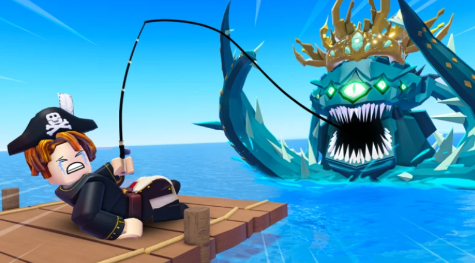
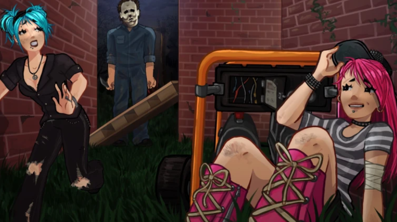
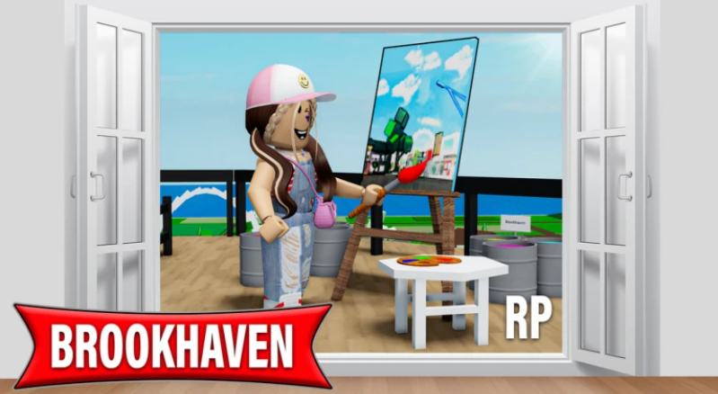
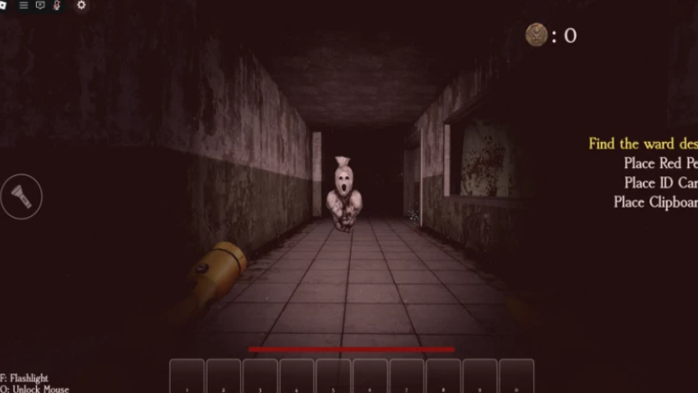
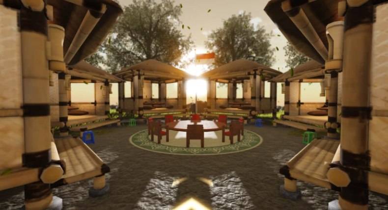
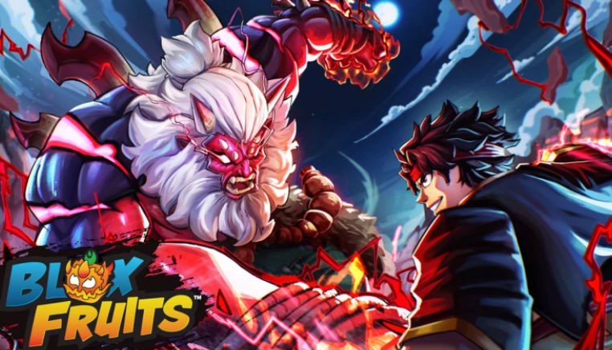
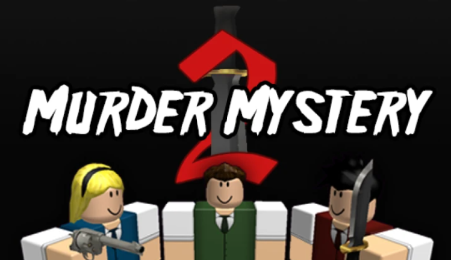

Fish It Fish it merupakan game memancing seru yang penuh kejutan, menghadirkan ikan rahasia, skin terbatas, area dan misi baru, serta berbagai event spesial. Pemain dapat mengumpulkan jutaan variasi ikan bersama teman sambil menjelajahi lautan luas dengan sistem memancing yang sederhana namun menegangkan. Beragam secret yang tersedia membuat setiap petualangan terasa semakin menarik. |
Violence District Violence District merupakan game horor asimetris yang masih dalam tahap alpha, di mana lima survivor harus bekerja sama menyelesaikan objektif dan melarikan diri dari seorang pembunuh yang memburu tanpa ampun. Dengan sumber daya terbatas dan suasana penuh ketegangan, setiap keputusan menentukan siapa yang bertahan hidup dan siapa yang menjadi korban. |
The Forge The Forge merupakan game RPG simulasi yang menggabungkan pertambangan, penempaan, dan pertempuran dalam satu petualangan seru. Pemain dapat menambang bijih langka, menempa lebih dari 1.000 variasi item dengan desain dan sifat unik, lalu menggunakannya untuk mengalahkan musuh dan menjelajahi pulau baru. Dengan sistem peningkatan melalui runes dan pembaruan konten yang terus hadir, setiap pemain bebas membangun gaya bermainnya sendiri dalam dunia yang terus berkembang |
Daftar Game Populer Saat Ini
BrookHaven BrookHaven merupakan game roleplay santai tempat pemain bisa hang out, memiliki rumah, mengendarai kendaraan, dan menjelajahi kota sambil menjadi siapa pun yang diinginkan. Dengan pembaruan rutin serta fitur server pribadi yang memberi kontrol penuh atas suasana permainan, game ini menghadirkan pengalaman sosial yang bebas dan menyenangkan. |
Pocong: Rumah Sakit Terkutuk Pocong: Rumah Sakit Terkutuk menghadirkan pengalaman horor menegangkan saat seorang pocong bangkit dan menghantui rumah sakit terbengkalai. Sebagai penyelidik, pemain harus mencari item ritual, menghindari kejaran di lorong gelap, dan menyelesaikan ritual untuk menenangkan arwahnya serta menghapus kutukan dalam empat stage. Dengan jumpscare keras dan efek cahaya berkedip, permainan ini menawarkan suasana mencekam yang disarankan dimainkan menggunakan headphone. |
Sambung Kata Sambung Kata merupakan game seru yang menantang pemain melanjutkan kata dari huruf terakhir kata sebelumnya tanpa boleh mengulang. Mengandalkan kecepatan dan kreativitas, pemain bisa memanfaatkan fitur kamus untuk merekam kata serta mengumpulkan aksesoris bambu guna meningkatkan pengalaman bermain dan bersaing menjadi yang terbaik. |
Dueling Grounds Dueling Grounds merupakan game PvP pertarungan cepat di mana pemain saling beradu menggunakan berbagai senjata untuk membuktikan siapa yang terkuat. Tersedia di PC, mobile, dan konsol, game ini mengandalkan refleks, strategi, serta penguasaan kontrol seperti serangan ringan dan berat, parry, blok, hingga menghindar untuk meraih posisi teratas dalam pertempuran. |
Blox Fruits Blox Fruits merupakan game petualangan aksi yang memungkinkan pemain menjadi ahli pedang atau pengguna kekuatan buah dengan kemampuan unik untuk menjadi yang terkuat. Pemain dapat melawan musuh dan boss tangguh sambil berlayar menjelajahi lautan demi menemukan rahasia tersembunyi, dengan berbagai pilihan buah berkekuatan berbeda serta sistem level yang terus berkembang. |
Murder Mystery Murder Mystery menghadirkan permainan misteri penuh ketegangan di mana pemain harus bertahan di setiap ronde dengan peran berbeda. Sebagai Innocent, kamu harus berlari dan mengungkap siapa pembunuhnya; sebagai Sheriff, lindungi pemain lain dengan satu-satunya senjata yang bisa menghentikan pembunuh; dan sebagai Murderer, habisi semua tanpa tertangkap. Ditambah koleksi serta sistem perdagangan ratusan pisau, setiap ronde terasa menegangkan dan penuh strategi. |
Game yang Direkomendasikan
| Nama Game | Genre | Rating | Pemain Aktif | Favorit | Dibuat |
|---|---|---|---|---|---|
| Fish It | Simulasi | 82% | 339.316 | 1.055.479 | 21/10/2024 |
| BrookHaven | Roleplay | 93% | 212.687 | 26.291.148 | 21/4/2020 |
| Murder Mystery | Survival | 90% | 144.191 | 21.242.151 | 18/1/2014 |
| Violence District | Survival | 92% | 20.196 | 912.930 | 31/10/2024 |
| Sambung Kata | Puzzle | 95% | 12.110 | 19.096 | 12/1/2026 |
| The Forge | RPG | 94% | 7.048 | 954.250 | 10/5/2025 |
| Pocong: Rumah Sakit Terkutuk | Survival | 83% | 5.046 | 32.221 | 20/1/2026 |
| Dueling Grounds | Action | 96% | 3.072 | 3.144.244 | 28/10/2025 |